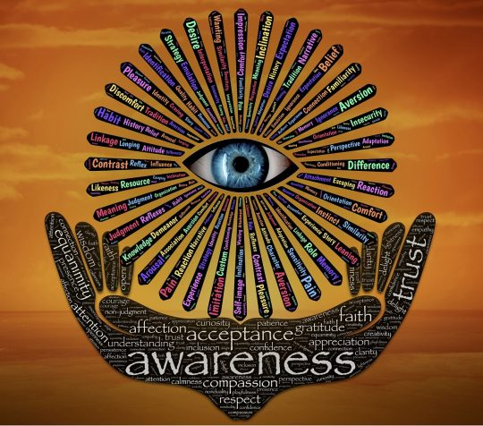

This article (Astrology & Self Care) was written for the wonderful Ephemeris.Co – we work together to bring the magic of Astrology to your world.
Astrology is on everyone's lips right now. From the catwalk to blogs, everyone wants a piece of this ancient, traditional art!
We're all looking for a little bit of truth, a little bit of sense in this crazy world.
And, we're all on a search to make ourselves more woke – conscious, for those not in the "know". Astrology is just one of those many, amazing tools out there that can help and guide us to a better knowledge of ourselves, of others and of the world.
Astrology, in short, helps us to face up to everything we like – and don't like – about ourselves, and urges us to accept ourselves as we truly are, as well as work on the less-desirable aspect of ourselves.
You can't not become wide-awake and self-aware when you study Astrology! And for all of you astro-lovers out there, this really is an obsession that never ends – thereby making us more and more woke in the process!
So, how exactly does astrology help us be more conscious?
Astrology Helps You to Become Aware of Yourself
Firstly, Astrology is a tool for self-awareness. For "Knowing Thyself", as the famous quote goes. As we search for a sense of identity, Astrology accelerates the journey, and some say discovering Astrology is like a long period of therapy!
When we are aware of ourselves – the good, the bad and the ugly, we can take measures to be better humans in the world. When we know what gifts we have, what potentials we possess, we can offer that to others in a proactive, constructive way.
This all goes towards healing the planet. As Gandhi so aptly said:
"Be the Change You Wish to See in The World".
When we are aware of ourselves, we are aware of our effect on others. We walk with a bit more inner peace, harmony and understanding.
Self-acceptance is one of the greatest gifts that Astrology can offer us!
Astrology Makes you More Tolerant of Others
Here's the best part about Astrology. Once you've gained that all important self-knowledge (perhaps through years or months of obsessive astrology studies – you know what I'm talking about!) – you're ready to spread your wings and take a look at other people.
When you start becoming more interested in others' astrology and want to figure out what makes them tick – well – you've taken a great leap and bound in terms of your consciousness!
You're ready to tune into others and perhaps help them, too. Whether it's with a reading or simply by understanding why, for example, you had that awful breakup and what motivated it– you're moving towards a more compassionate state of mind.
And, what the world needs more of is understanding and compassion, right?
Imagine if we just accepted each other as they are? Imagine if we met that irritating quality with a whole lot more tolerance, knowing that person's chart has a tricky Moon sign, or Mars aspect. And maybe you're advanced enough to understand that their tricky placements interact in a challenging way with your own planetary placements.
This, dear friends, is a route to true understanding and enlightenment. If everyone could know just a little about astrology, there'd probably be a lot less judgement going on!
Astrology Tunes You into The Language of The Universe
The third, final and probably the most imploring state of astrological consciousness, is the stage where, once you've figured yourself and others out, you're ready to understand the universe.
Did you know that astrology used to be only used for political, big events? To predict the coming of kings, the start of a war, which King needed to marry which Queen and to understand how disasters happened, and the heavenly signatures around them?
That's right – astrology wasn't available to individuals like you and me before. We are lucky, these days, to have access to this vast knowledge.
There's a point, with Astrology, where you come to understand the patterns and order of the universe. And really, it's beautiful. It's awe-inspiring. It leaves you breathless and wonder-struck at the perfection of it all.
Once you see that the universe is not at all chaotic, you begin to rest assured that there really is a "grand plan" to it all. Honestly – it's a relief. And what could be more woke than knowing what the universe is up to?
Astrology gives us all a peek behind the veil, and unravels what seems like a giant, crazy, disorganized mystery. It helps us to understand where we came from, where we are going, and what our place is in the world. It helps us to knit the pieces together to form a whole and complete picture.
We don't need to sweat the small stuff when we know that something else has it all in hand.

We can just be present, living in the moment, and living to out full potential, whilst letting others live too.
In a perfect world, everyone would have this knowledge! Of course, we would still get annoyed and have fights and shake our fists at the heavens, and have painful breakups! But we would have the ever-so-small kernel of knowledge to help us truly get the whys and wherefores of what's going on!
So, why does Astrology make us more woke? It's a tool. A guidebook. A roadmap. It helps point us in the right direction, and whilst it doesn't make our decisions for us (nothing and no-one should ever do that); it certainly helps us to choose more wisely, knowing the potential consequences of our choices.
Astrology can be like a best buddy, always on our shoulders – our heavenly GPS system. The next time your buddies are curious about why you're so darn passionate about Astrology, simply show them this article, and perhaps, just perhaps, point them in the direction of their own charts.
Let them know that Astrology is not a belief system – it doesn't need belief. It just simply works. You're welcome.